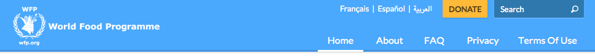
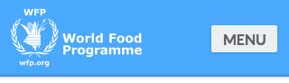

Masthead
This pattern is the single, most important way to indicate to your visitors that they are browsing WFP's online property. Below, you will find most commonly used patterns for your masthead.
Masthead patterns will vary slightly, depending on your use case, whether the website, but generally follow the same basic style.
Public Page
These pages are always available to the public, therefore need to represent WFP's brand apropriately. Please, make sure you always use only the official logo, without any alterations. Check out our online branding toolkit for more information.
Public pages should always use a logo with a caption "World Food Programme". For smaller screens, you can serve a narrower version of the logo, with a two-line caption.
Wide Layout

Narrow Layout

Sample Markup
<!-- Masthead -->
<header class="masthead">
<div class="pure-g wrapper">
<div class="pure-u-2-3 pure-u-sm-1-3">
<h1 class="wfp-logo">
<a href="/en/my/" class="wfp-logo-img"><img src="/sites/all/themes/my_wfp_org/img/logos/logo@256w.png" class="logo-dark" alt="UN World Food Programme"></a>
</h1>
</div>
<div class="pure-u-1-3 pure-u-sm-2-3">
<div class="additional">
<nav class="component header-lang">
<ul>
<li><a href="#">Français</a></li>
<li><a href="#">Español</a></li>
<li><a href="#">العربية</a></li>
</ul>
</nav>
<div class="component header-cta">
<a href="/en/account" class="pure-button small">Sign In</a>
</div>
<div class="component header-search">
<form class="pure-form">
<input type="search" class="input-search" name="search_theme_form" id="search-form-input" placeholder="Search...">
<button class="pure-button search small transparent"><i class="ss-icon">search</i></button>
</form>
</div>
</div>
<nav class="main-nav">
<ul>
<li><a href="#">Home</a></li>
<li><a href="#">About</a></li>
<li><a href="#">FAQ</a></li>
<li><a href="#">Privacy</a></li>
<li><a href="#">Terms Of Use</a></li>
</ul>
</nav>
</div>
</div>
</header>Sample CSS
.masthead {
background-color: #4AA8FD;
border-bottom: 3px solid #4295E0;
color: #ffffff;
box-shadow: rgba(0,0,0,0.2) 0 1px 3px;
max-height: 82px;
}
.masthead .wfp-logo {
margin: 0.3em 0;
display: inline-block;
}
.masthead .wfp-logo a {
border: none;
}Internal Page